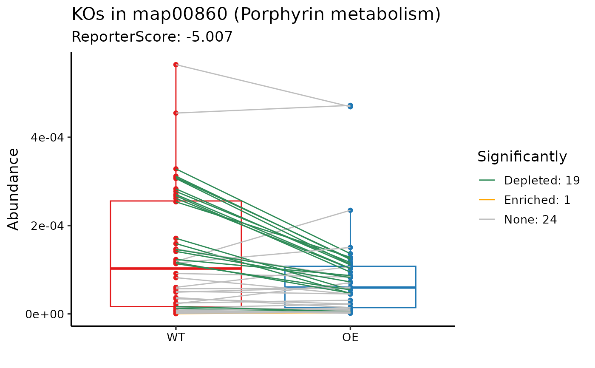

Plot features trend in one pathway or module
plot_features_in_pathway(
ko_stat,
map_id = "map00780",
modulelist = NULL,
select_ko = NULL,
box_color = reporter_color,
show_number = TRUE,
scale = FALSE,
feature_type = "KOs",
line_color = c(Depleted = "seagreen", Enriched = "orange", None = "grey", Significant =
"red2")
)ko_stat result from pvalue2zs or result of `get_reporter_score`
the pathway or module id
NULL or customized modulelist dataframe, must contain "id","K_num","KOs","Description" columns. Take the `KOlist` as example, use custom_modulelist.
select which ko
box and point color, default: c("#e31a1c","#1f78b4")
show the numbers.
scale the data by row.
show in the title ,default: KOs
line color, default: c("Depleted"="seagreen","Enriched"="orange","None"="grey")
ggplot
# \donttest{
data("reporter_score_res")
plot_features_in_pathway(ko_stat = reporter_score_res, map_id = "map00860")

# }